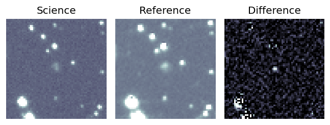
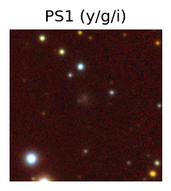

Candidate List 20250801 Previous Day Next Day Section 1: New Sources (age<1d) Cosmological Afterglow
Section 2: Old (1-5d) sources observed last night placeholder
Section 1: New Afterglow/FBOT Cands Last Night (2)
1. ZTF25abgiajc (Afterglow?) [Back to Top] [Share] [Trigger Swift] [Fritz ] [Lasair ]RA, Dec: 285.18531, 29.76788 19h 0m44.47s, 29d46m4.35sGalactic (l, b): 60.76501, 11.24697 ext(g-r) = 0.213PS1: 1 source in 3 arcsec Closest: d = 1.04 arcsec photoz=0.62+/-0.24 peak abs mag = -23.43 Consistent with synchrotron, g-r>0!
2. ZTF25abgjmps (Afterglow?) [Back to Top] [Share] [Trigger Swift] [Fritz ] [Lasair ]RA, Dec: 356.70472, 2.97646 23h46m49.13s, 2d58m35.26sGalactic (l, b): 93.05201, -56.1003 ext(g-r) = 0.052peak abs mag = -22.25 LegacySurvey: 1 sources in 3 arcsec Closest: d = 6.24 arcsec, 108.1 deg (east of north) photoz=0.53 (68% bounds 0.42, 0.71), type=PSF peak abs mag = -25.38 (68% bounds -24.79, -26.15)
Section 2: Older Sources Observed Last Night (16)
0. ZTF25abecvml (FBOT?) [Back to Top] [Share] [Trigger Swift] [Fritz ] [Lasair ]RA, Dec: 347.52788, 3.15332 23h10m6.69s, 3d 9m11.95sGalactic (l, b): 80.07792, -51.08804 ext(g-r) = 0.06peak abs mag = -22.57 LegacySurvey: 1 sources in 3 arcsec Closest: d = 0.42 arcsec, 62.6 deg (east of north) photoz=0.09 (68% bounds 0.07, 0.11), type=REX peak abs mag = -20.12 (68% bounds -19.54, -20.55)
1. ZTF25abenrnv (Afterglow?) [Back to Top] [Share] [Trigger Swift] [Fritz ] [Lasair ]RA, Dec: 349.03567, -25.45045 23h16m8.56s, -25d-27m-1.62sGalactic (l, b): 32.02023, -68.60635 ext(g-r) = 0.024PS1: 1 source in 3 arcsec Closest: d = 0.51 arcsec photoz=0.19+/-0.02 peak abs mag = -20.25
2. ZTF25abeuvaa (FBOT?) [Back to Top] [Share] [Trigger Swift] [Fritz ] [Lasair ]RA, Dec: 327.90779, -27.248 21h51m37.87s, -27d-14m-52.81sGalactic (l, b): 22.06467, -50.23943 ext(g-r) = 0.033PS1: 1 source in 3 arcsec Closest: d = 1.16 arcsec photoz=0.34+/-0.29 peak abs mag = -22.43
3. ZTF25abewmjr (Afterglow?FBOT?) [Back to Top] [Share] [Trigger Swift] [Fritz ] [Lasair ]RA, Dec: 337.98148, 32.6787 22h31m55.56s, 32d40m43.32sGalactic (l, b): 91.75251, -21.61408 ext(g-r) = 0.091peak abs mag = -20.88 LegacySurvey: 1 sources in 3 arcsec Closest: d = 1.10 arcsec, 302.0 deg (east of north) photoz=0.1 (68% bounds 0.07, 0.16), type=EXP peak abs mag = -20.18 (68% bounds -19.38, -21.24)
4. ZTF25abewrxj (Afterglow?) [Back to Top] [Share] [Trigger Swift] [Fritz ] [Lasair ]RA, Dec: 5.54352, 34.76596 0h22m10.45s, 34d45m57.47sGalactic (l, b): 116.14536, -27.71986 ext(g-r) = 0.06peak abs mag = -17.64 PS1: 1 source in 3 arcsec Closest: d = 4.49 arcsec photoz=0.06+/-0.01 peak abs mag = -18.31 Consistent with synchrotron, g-r>0!
5. ZTF25abeyogz (FBOT?) [Back to Top] [Share] [Trigger Swift] [Fritz ] [Lasair ]RA, Dec: 327.51972, -10.43359 21h50m4.73s, -10d-26m-0.91sGalactic (l, b): 45.35054, -44.25132 ext(g-r) = 0.042LegacySurvey: 1 sources in 3 arcsec Closest: d = 0.13 arcsec, 170.7 deg (east of north) photoz=0.23 (68% bounds 0.14, 0.34), type=REX peak abs mag = -20.78 (68% bounds -19.53, -21.74) Consistent with synchrotron, g-r>0!
6. ZTF25abfnszm (FBOT?) [Back to Top] [Share] [Trigger Swift] [Fritz ] [Lasair ]RA, Dec: 242.20821, 39.33795 16h 8m49.97s, 39d20m16.61sGalactic (l, b): 62.6109, 47.51577 ext(g-r) = 0.012peak abs mag = -18.38 LegacySurvey: 1 sources in 3 arcsec Closest: d = 0.27 arcsec, 96.2 deg (east of north) photoz=0.09 (68% bounds 0.06, 0.13), type=SER peak abs mag = -19.57 (68% bounds -18.4, -20.24)
7. ZTF25abfoala (Afterglow?) [Back to Top] [Share] [Trigger Swift] [Fritz ] [Lasair ]RA, Dec: 284.11509, 21.87964 18h56m27.62s, 21d52m46.70sGalactic (l, b): 53.10958, 8.73291 ext(g-r) = 0.394PS1: 1 source in 3 arcsec Closest: d = 4.68 arcsec photoz=0.72+/-0.13 peak abs mag = -25.11
8. ZTF25abfonib (Afterglow?) [Back to Top] [Share] [Trigger Swift] [Fritz ] [Lasair ]RA, Dec: 338.16174, -16.38547 22h32m38.82s, -16d-23m-7.68sGalactic (l, b): 44.1792, -56.16374 ext(g-r) = 0.042PS1: 1 source in 3 arcsec Closest: d = 0.40 arcsec photoz=0.12+/-0.01 peak abs mag = -19.15 Consistent with synchrotron, g-r>0!
9. ZTF25abfswcc (FBOT?) [Back to Top] [Share] [Trigger Swift] [Fritz ] [Lasair ]RA, Dec: 343.59624, -15.73111 22h54m23.10s, -15d-43m-51.99sGalactic (l, b): 49.68061, -60.57011 ext(g-r) = 0.043PS1: 1 source in 3 arcsec Closest: d = 2.26 arcsec photoz=0.20+/-0.07 peak abs mag = -20.08
10. ZTF25abghaka (Afterglow?) [Back to Top] [Share] [Trigger Swift] [Fritz ] [Lasair ]RA, Dec: 254.20112, 28.87815 16h56m48.27s, 28d52m41.33sGalactic (l, b): 50.16431, 36.43896 ext(g-r) = 0.044peak abs mag = -18.57 LegacySurvey: 1 sources in 3 arcsec Closest: d = 0.88 arcsec, 190.9 deg (east of north) photoz=0.13 (68% bounds 0.11, 0.15), type=SER peak abs mag = -18.67 (68% bounds -18.29, -18.96) Consistent with synchrotron, g-r>0!
11. ZTF25abghekd (FBOT?) [Back to Top] [Share] [Trigger Swift] [Fritz ] [Lasair ]RA, Dec: 289.24542, 37.93997 19h16m58.90s, 37d56m23.89sGalactic (l, b): 69.77247, 11.67072 ext(g-r) = 0.132 peak abs mag = -19.20 PS1: 1 source in 3 arcsec Closest: d = 2.19 arcsec photoz=0.17+/-0.07 peak abs mag = -19.59
12. ZTF25abghevu (Afterglow?) [Back to Top] [Share] [Trigger Swift] [Fritz ] [Lasair ]RA, Dec: 265.26123, 39.2358 17h41m2.70s, 39d14m8.87sGalactic (l, b): 64.64116, 29.79058 ext(g-r) = 0.044LegacySurvey: 1 sources in 3 arcsec Closest: d = 1.33 arcsec, 344.4 deg (east of north) photoz=0.06 (68% bounds 0.04, 0.08), type=SER peak abs mag = -16.85 (68% bounds -15.95, -17.71) Consistent with synchrotron, g-r>0!
13. ZTF25abgjfhr (FBOT?) [Back to Top] [Share] [Trigger Swift] [Fritz ] [Lasair ]RA, Dec: 19.91486, 31.65435 1h19m39.57s, 31d39m15.66sGalactic (l, b): 129.92596, -30.83385 ext(g-r) = 0.076peak abs mag = -23.72 LegacySurvey: 1 sources in 3 arcsec Closest: d = 0.50 arcsec, 238.8 deg (east of north) photoz=0.08 (68% bounds 0.05, 0.13), type=EXP peak abs mag = -17.83 (68% bounds -16.68, -18.89) Consistent with synchrotron, g-r>0!
14. ZTF25abgkxsx (Afterglow?) [Back to Top] [Share] [Trigger Swift] [Fritz ] [Lasair ]RA, Dec: 328.97029, -6.26775 21h55m52.87s, -6d-16m-3.91sGalactic (l, b): 51.35066, -43.42042 ext(g-r) = 0.032peak abs mag = -25.07 LegacySurvey: 1 sources in 3 arcsec Closest: d = 3.64 arcsec, 260.4 deg (east of north) photoz=0.84 (68% bounds 0.75, 0.97), type=REX peak abs mag = -25.31 (68% bounds -24.99, -25.7)
15. ZTF25abgnaqf (Afterglow?) [Back to Top] [Share] [Trigger Swift] [Fritz ] [Lasair ]RA, Dec: 5.30596, 45.01749 0h21m13.43s, 45d 1m2.97sGalactic (l, b): 117.33982, -17.52594 ext(g-r) = 0.071PS1: 1 source in 3 arcsec Closest: d = 2.06 arcsec photoz=0.70+/-0.08 peak abs mag = -23.51